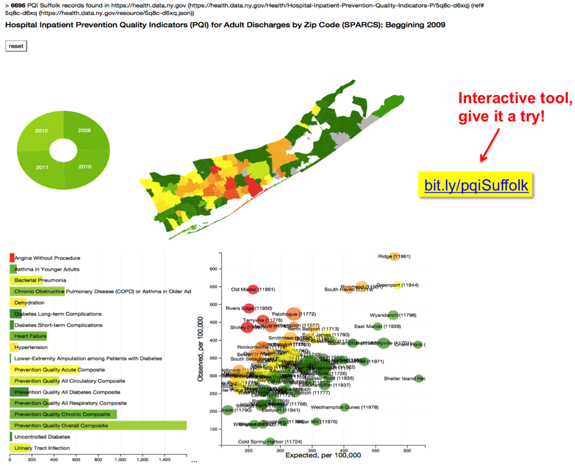

Your browser doesn't support the features required by impress.js, so you are presented with a simplified version of this presentation.
For the best experience please use the latest Chrome, Safari or Firefox browser.
map
As in all new fields of academic inquiry, Data Science starts with an identity crisis.
So, what’s new about the way Data Science derives from Computer Science, Biostatistics and Genomic Atlases?
Does the deployment of interoperable Data Spaces, the commoditization of Cloud Computing,
and optimized classification with Machine Learning fundamentally contribute to answering important questions?
What about prevention, does Data Science even play a role in that translation?
This discussion will be illustrated with examples of how Data Science already contributes to some of these endeavors,
and how it could for many others, as it matures into a quantitative framework that is both pervasive and participated.
It will be argued, and illustrated with published work, that Data Science opens a number of novel avenues in
quantitative research that are relevant for Population Science and Cancer Prevention.
b i t . l y / d c e g D a t a S c i
Discussion points
1. Seeing the forest and the trees
Individual variability in the response to multivariate factors creates the tandem challenges of
identifying both broad risk factors and unevenly stratified individual determinants.
An example taken from NY’s DSRIP program will be used to illustrate the ability to simultaneously traverse both signals.
2. Settlers and Explorers
In a NSF study about the evolving needs of a Scientific workforce, Data Science was identified as transdisciplinary in the
resources it needs, the methods it develops, and the training it provides.
Two examples, in genomics and digital pathology from TCGA will be used to illustrate how API ecosystems
allow Data Scientists to approach Big Data as explorers that open new data spaces for
settling by (non data scientist) domain researchers.
3. Bioinformatics Narratives
Bioinformatics is nearing the end of its second decade as a discipline.
The procedural complexity of its algorithms represent significant obstacles to the
lasting reproducibility of its computationally intensive workflows.
It also makes conflict/complementarity between analytical narratives hard to ascertain.
Intriguingly, this strive for scalability in computational solutions
is itself an opportunity for Bioinformatic algorithm identification.
4. Digital primary care
For cancer prevention, this may one day be the most interesting tool in the Data Science toolbox:
the ability to insert primary care in the digital neighborhoods that a population traverses.
Our medical students have started companies that do this,
they are now trying to engage us back with new avenues for cancer prevention.
b i t . l y / d c e g D a t a S c i
1. Seeing the forest and the trees
Individual variability in the response to multivariate factors creates the tandem challenges of
identifying both broad risk factors and unevenly stratified individual determinants.
An example taken from NY’s DSRIP program will be used to illustrate the ability to simultaneously traverse both signals.
> With OpenData

Almeida JS, Hajagos J, Crnosija I, T Kurc, M Saltz, J Saltz (2016)
OpenHealth Platform for Interactive Contextualization of Population Health Open Data.
Proceedings AMIA 2015: 297-305 [PMID:26958160].
- With Inhouse data
- All the way to the sap
b i t . l y / d c e g D a t a S c i
1. Seeing the forest and the trees
Individual variability in the response to multivariate factors creates the tandem challenges of
identifying both broad risk factors and unevenly stratified individual determinants.
An example taken from NY’s DSRIP program will be used to illustrate the ability to simultaneously traverse both signals.
- With OpenData
> With Inhouse data

- All the way to the sap
b i t . l y / d c e g D a t a S c i
1. Seeing the forest and the trees
Individual variability in the response to multivariate factors creates the tandem challenges of
identifying both broad risk factors and unevenly stratified individual determinants.
An example taken from NY’s DSRIP program will be used to illustrate the ability to simultaneously traverse both signals.
- With OpenData
- With Inhouse data
> All the way to the sap